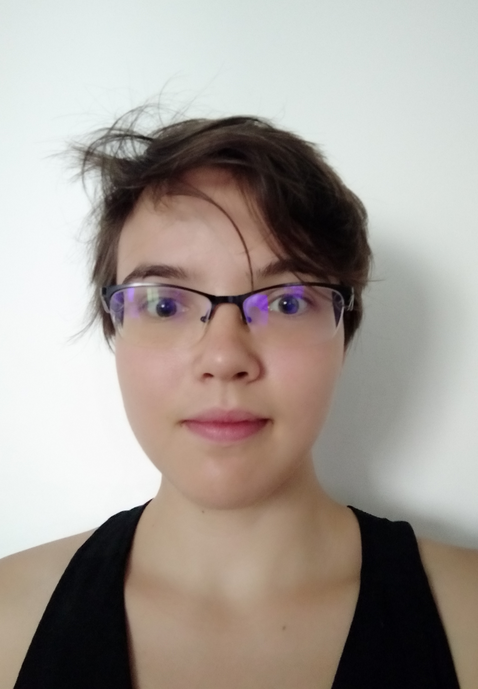

Cécile GachetResearcher in algebraic geometry |
|  |
Since May 2023, I am a post-doctoral fellow at
Humboldt-Universität zu Berlin,
in the algebraic geometry group led by
Prof. Dr. Gavril Farkas.
My position is partly funded by the ERC Advanced Grant
SYZYGY: Syzgies, moduli and topological invariants of groups.
Prior to that, I defended my Ph.D. thesis "Positivity of the (co)tangent sheaf and of Chern classes" in February 2023 at Université Côte d'Azur, Laboratoire J.A. Dieudonné, Nice, France. My doctoral supervisor was Prof. Dr. Andreas Höring. I obtained my Master's degree at Sorbonne Université in September 2019. My research interests encompass positivity of the (co)tangent sheaf on smooth and singular varieties, positivity of Chern classes, Calabi-Yau varieties and pairs, finite group actions on smooth and singular varieties, (notably varieties with quotient singularities), the Kawamata-Morrison-Totaro cone conjecture. |